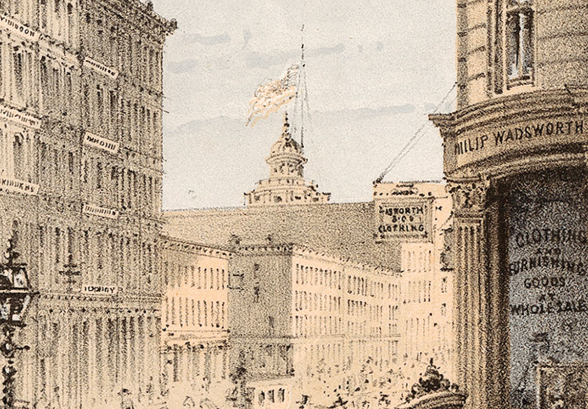
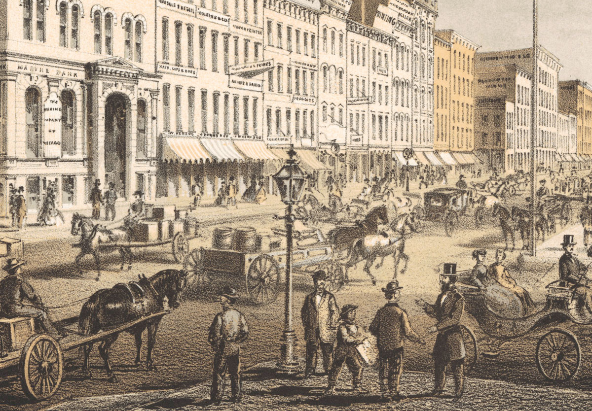

Tour The Commercial District
Take in the sights and sounds of Lake Street and do some shopping, too!
Corner of Lake Street and Wabash Avenue
-

Corner of Lake Street and Wabash Avenue
Lake Street is Chicago’s busiest thoroughfare. Wholesale garment merchants occupy this stretch of iron-front buildings. Further west, you can see the flag and cupola of the Tremont House, one of Chicago’s most popular hotels.
iChi-62076
-

Iron-front buildings
Built in 1857–58, these buildings are reportedly fireproof, but the lack of interior firewalls may create hazardous conditions in the future.
iChi-63076
-

Tremont House
Abraham Lincoln usually stays at the Tremont House when he visits Chicago. On July 10, 1858, Lincoln made one of his most famous speeches against slavery from the front balcony overlooking Lake and Dearborn Streets.
iChi-63056
Marine Bank Building
-

Marine Bank Building
The Marine Bank on Lake Street is one of Chicago’s first buildings made of Illinois-quarried marble. Across the street is Brayer Brothers Art Gallery, where you can stop to have your photograph taken.
iChi-63077
-

Lake Street
In 1858–59, city workers raised Lake Street and all of its buildings by six feet to install sewers and improve drainage. Previously, rain turned the street into a muddy mess.
iChi-63078
-

Brayer Brothers Art Gallery
Photography—what a marvel! While in Chicago, stop here to have your picture taken and made into a carte de visite, a small calling card to give to family and friends.
iChi-63079
Corner of Lake and Wells Streets
-

Corner of Lake and Wells Streets
As you tour Chicago, be sure to notice that many streets are covered with Nicholson Pavement, a unique method developed by engineers in the 1850s to combat the city’s muddy streets. Visible in the distance is the Wells Street Bridge.
iChi-40005
-

Nicholson Pavement
To create this surface, workers dip pine blocks in tar and set them like bricks. Next, they pour pitch over the surface and add gravel on top. The method is ingenious but may prove to be a fire hazard.
iChi-63080
-

Wells Street Bridge
This bridge, like several others in Chicago, pivots on its banks to allow ships to pass. This aids river traffic but means that street traffic has to wait for the bridge to pivot back to cross the river.
iChi-63081